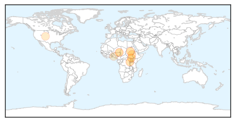
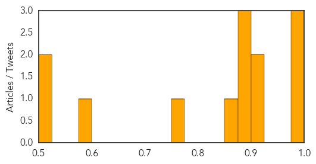

Cholera
30-Day Web Trend
0 alerts, 0 warnings

30-Day Twitter Trend
3 alerts, 0 warnings

Article Locations
Article Confidences

Top Articles:
- 0.999
- South Sudan: MSF opens a cholera treatment center in Juba
- 0.907
- EAC deploys Regional Medical Emergency Support Teams to Refugee Camps > IGIHE.com English Version
- 0.886
- Cholera Cases Multiply as Cost of Clean Water Skyrockets in South Sudan Capital: Oxfam
- 0.819
- The Upper Nile Times Cholera Outbreak Kills 33 People in JubaThe Upper Nile Times
- 0.618
- Newmont Mining signs three-year agreement for Project C.U.R.E
- 0.571
- Niger: Critical situation in Diffa
- 0.564
- Niger: critical situation in Diffa as hunger gap and malaria season approach
- 0.544
- Sixty million Nigerians lack access to clean water, says Sobowale
Top Tweets:
-
No tweets found for Jul 14, 2015
West Nile Virus
30-Day Web Trend
4 alerts, 1 warnings

30-Day Twitter Trend
4 alerts, 0 warnings

Article Locations
Article Confidences
Top Articles:
- 0.996
- West Nile Virus Spreads in US; 26 Symptoms, Treatment & Facts
- 0.991
- Drought could worsen West Nile spread
- 0.987
- Crow tests positive for West Nile virus
- 0.924
- Dead bird tests positive for West Nile in Racine County
- 0.923
- Health officials urge Eau Claire County residents to take precau
- 0.892
- Dead Crow Found In London Tests Positive For West Nile Virus
- 0.891
- First West Nile virus case of 2015 reported in North Dakota
- 0.883
- Mosquitoes in Toledo test positive for West Nile
- 0.858
- El Paso prepares for a heavy mosquito season
- 0.750
- West Nile detected at Wildwood Metropark
- 0.585
- Insect-borne disease precaution needed
- 0.524
- Weld County health officials: West Nile virus found in mosquitoes
- 0.511
- Health Department to start weekly mosquito testing
Top Tweets:
-
No tweets found for Jul 14, 2015